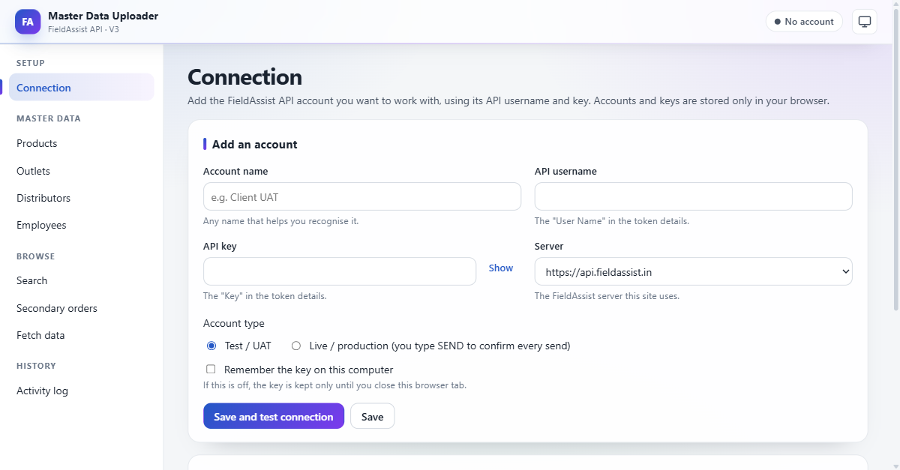

Implementation and onboarding
I set up master data, run user training, and stay with the client until they go live. I also prepare the monthly service review.
Mesharet Ivan Lorica, Philippines
I keep FMCG enterprise accounts live, supported and getting value from their SaaS. I run implementations and act as their main point of contact, with ITIL 4 Foundation and IT support experience since 2020.
SaaS implementation and client support
When the same support task keeps coming back, I build a small tool so the team stops doing it by hand.
98%
CSAT at the Infosys BPM service desk
95%
of issues resolved within SLA at Infosys BPM
150+
dental clinic clients supported at Everise
Since 2020
in IT support, now in customer success
I set up master data, run user training, and stay with the client until they go live. I also prepare the monthly service review.
I am the client's single point of contact. I work with their sales and IT teams on one side and our product and tech teams on the other.
ITIL 4 Foundation and two and a half years on an ITIL service desk. Tickets get logged, owned and closed.
Small web tools and n8n workflows for repeat work: a ticket tracker on top of Asana, a master data dashboard, and scheduled reminder and report emails.
See the projectsMain point of contact for FMCG enterprise accounts on the FieldAssist sales force automation (SFA) and distributor management system (DMS) platform. I run implementation, master data uploads, user training and monthly service reviews. I track client tickets in ServiceNow, Asana and Freshdesk and follow them up with the tech team until closed. I built the web tools and n8n workflows shown below.
Supported end users of two global consumer brands through an ITIL service desk. Held a 98% CSAT score and resolved 95% of issues within SLA. Handled account and access requests and Microsoft 365, Active Directory and VPN issues in ServiceNow.
Supported 150+ dental clinics on Carestream Dental software, including Citrix and imaging device issues. Reached 80% first contact resolution.
Supported users of the UPS WorldShip shipping software. Reached 95% first contact resolution.
Turns Asana projects into a client ticket list: who owns each ticket, its status, and the latest comment and who wrote it. Each visitor connects with their own Asana token, kept in an encrypted browser cookie. The tool only reads data.
Reads master data through 84 read endpoints of a sales force automation platform's API and can upload changes. It points to the test environment by default and asks for a typed confirmation before any live upload.

Scheduled workflows that send weekly reminders and report emails for my team, so nobody has to remember to send them by hand.
They run on free hosting, so the first visit can take a moment to load.
Open the Asana ticket trackerOpen the SFA master data dashboard
ITIL 4 Foundation. TESDA Mechatronics NC II.
MFI Polytechnic Institute Inc., Mechatronics, 2011 to 2013.
English and Filipino.